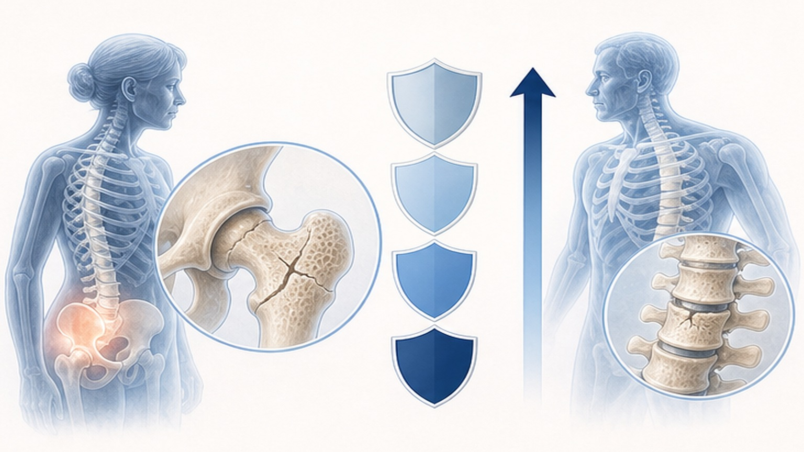
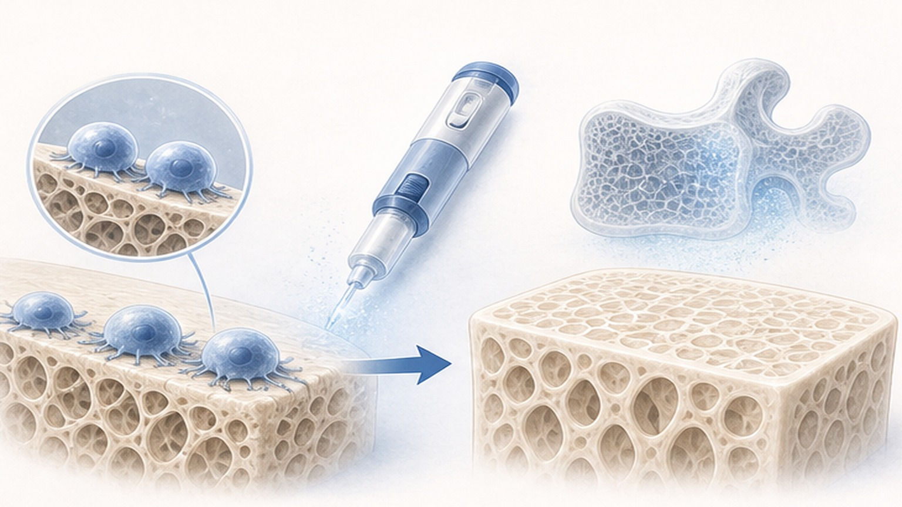
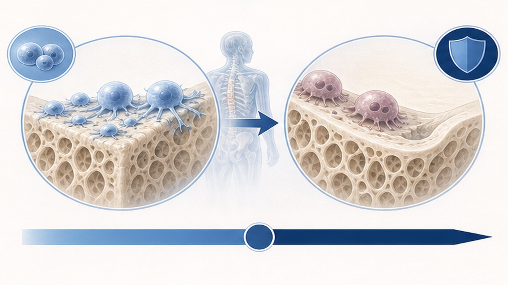
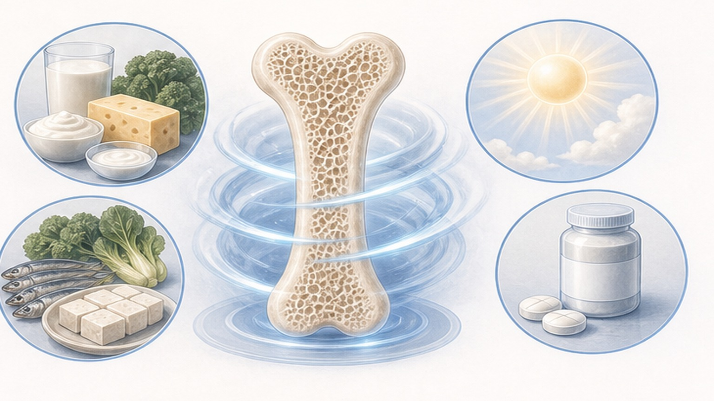

골다공증,
뼈 건강 평생 관리하기
DXA T-score, FRAX, 약물 순차치료, 칼슘·비타민 D, 운동·낙상 예방까지 한눈에 정리합니다
골다공증 (Osteoporosis) — 한국의 현실
뼈가 약해져 작은 충격에도 골절이 생기는 흔하지만 치료 가능한 질환입니다
70세 이상은 68.5%
DXA 골밀도 검사와 T-score
뼈의 '밀도 성적표' — 가장 낮은 부위의 T-score로 진단합니다
요추 (L1–L4) 와 대퇴경부·전체 대퇴부 중 가장 낮은 T-score로 진단합니다. 동일 기기에서 1~2년마다 추적해 변화를 추적합니다.
T-score는 같은 성별 젊은 성인 평균 골밀도와의 표준편차 차이를 의미합니다. -1.0 이상이면 정상, -1.0 ~ -2.5 사이는 골감소증 (Osteopenia), -2.5 이하면 골다공증 (Osteoporosis) 으로 진단합니다. 골절을 동반하면 중증 골다공증이며, FRAX 같은 위험도 도구로 10년 내 골절 확률을 함께 평가합니다. 치료 목표는 T-score > -2.5, 고위험군은 ≥ -2.0 입니다.
골절 위험도 분류와 초고위험군
위험도가 높을수록 빠르고 강하게 — 초고위험군은 골형성촉진제 우선 고려

골흡수억제제 — 뼈가 녹는 것을 막는 약
비스포스포네이트와 데노수맙 — 1차 치료의 중심 약제
골형성촉진제 — 새 뼈를 만드는 약
초고위험군에서 뼈 미세구조를 빠르게 복원하는 1단계 치료

순차치료 (Sequential Therapy) 전략
초고위험군은 '먼저 채우고, 그다음 잠그는' 단계별 치료가 표준입니다

경구 비스포스포네이트 복용법
복용 규칙을 정확히 지켜야 약효가 제대로 나오고 식도 손상을 막을 수 있습니다
- 기상 직후 아침 공복에 복용
- 200mL 이상 생수와 함께 삼키기
- 복용 후 30분~1시간 직립 자세 유지
- 치과 치료 전 담당의에게 약 복용 사실 알리기
- 5년 이상 사용 시 약물 휴약기 (Drug Holiday) 논의
- 허벅지 통증·시력 저하 즉시 보고
- 커피·주스·우유와 함께 복용 (흡수↓↓)
- 복용 후 바로 눕기 (식도 궤양 위험)
- 칼슘제와 동시 복용 (흡수 방해 — 2시간 간격)
- 임의 중단 — 특히 골절 고위험군
- eGFR < 35 환자에 투여 (금기)
- 허벅지 통증 무시 (비정형 대퇴골 골절 의심)
칼슘과 비타민 D — 약효의 토대
칼슘은 시멘트, 비타민 D는 시멘트를 현장에 배달하는 트럭입니다

운동 처방 — Strong, Steady, Straight
영국왕립골다공증학회 (ROS) 합의 권고안 기반 — 강하게, 안정적으로, 곧은 자세로
오늘 꼭 기억할 핵심 8가지
골다공증은 꾸준한 관리로 골절을 막을 수 있는 치료 가능한 질환입니다
뼈 건강, 함께 관리하면
지킬 수 있습니다
조기 발견·꾸준한 약물·영양·운동 관리로 골절 위험을 극적으로 줄일 수 있습니다 — 궁금한 점은 언제든 문의해 주세요
광교중앙로 298, 4층
토요일 08:30~13:30
같은 자료를 다시 볼 수 있어요